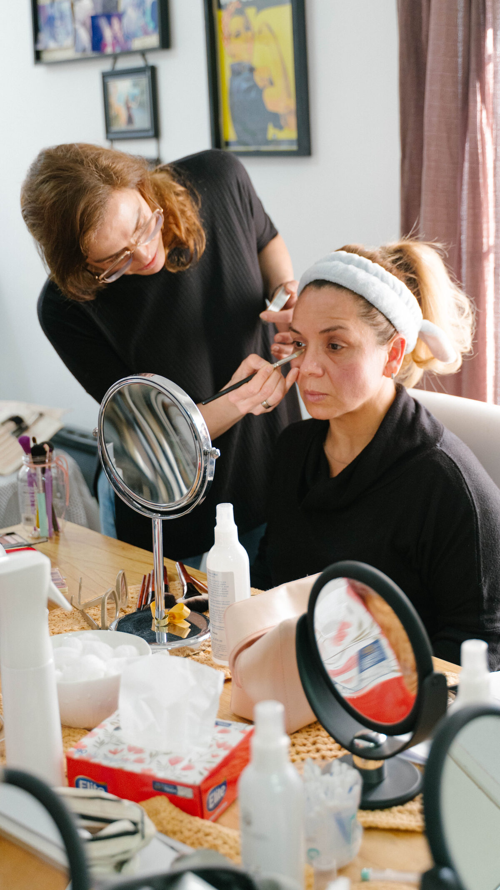
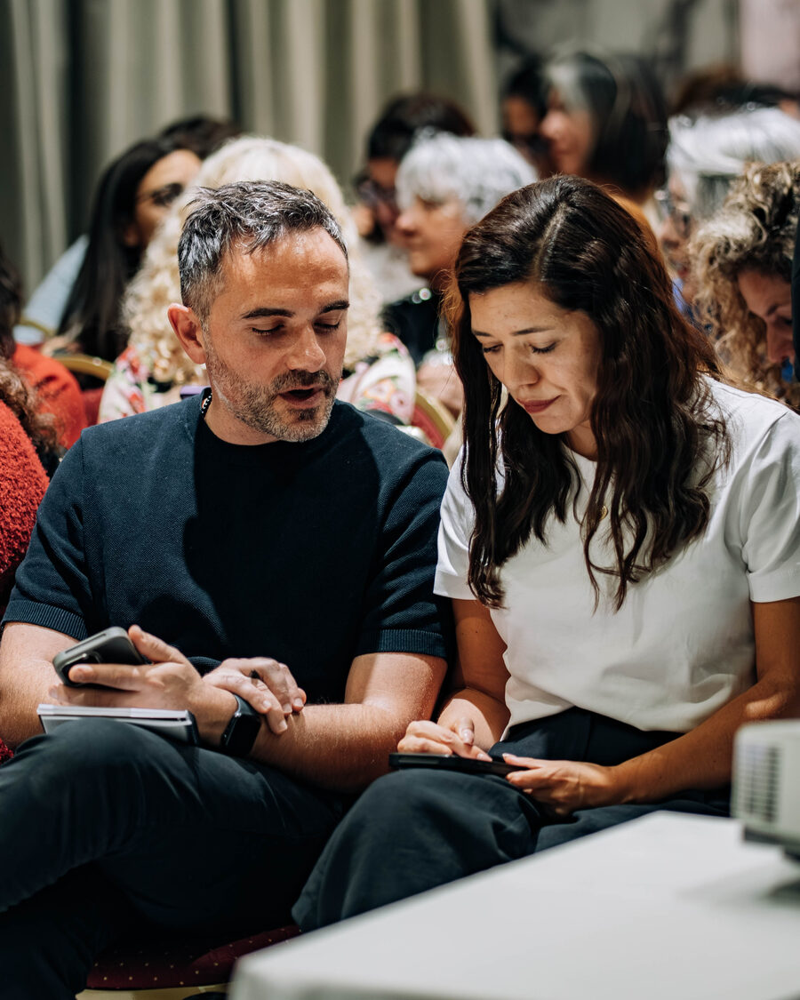
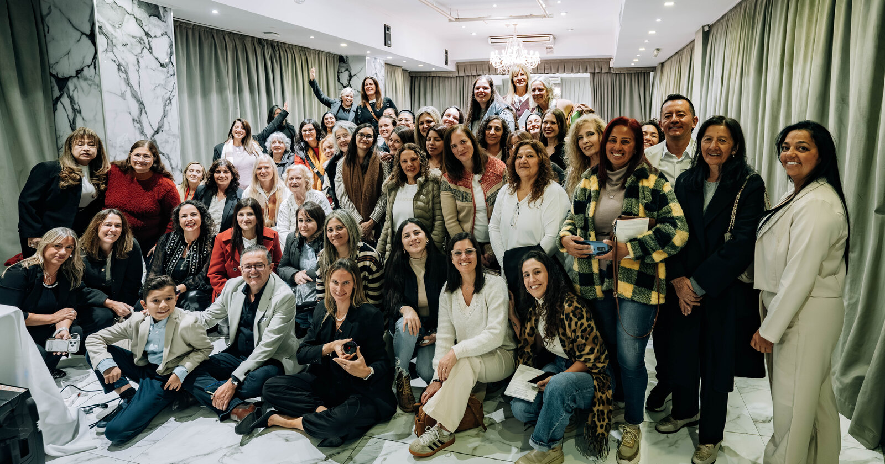

El diferencial de Piu Bella Spa no es un producto: es la formación. Marcela lo entendió desde el día uno. Un equipo bien capacitado no depende de la suerte ni del carisma — depende del conocimiento. Y en la industria del bienestar, el conocimiento se traduce en resultados medibles.
¿Por qué una escuela y no solo un curso?
La mayoría de los "programas de capacitación" en la industria son un onboarding de 2 semanas y después estás por tu cuenta. Nosotros hacemos algo distinto: capacitación continua, cada semana, para siempre. Porque el mundo del bienestar avanza — nuevas investigaciones, nuevos productos, nuevas herramientas — y tu formación tiene que avanzar con él.
"Cualquiera puede vender un producto. Pocos pueden explicar por qué funciona con evidencia científica. Ese es el diferencial que buscamos." — Marcela Viviana Miron
Los 4 ejes de la capacitación

1. Ciencia y salud
Sesiones periódicas con médicos, bioquímicos y especialistas en dermatología, nutrición y bienestar. Recientemente tuvimos al Dr. Hector Romero, especialista colombiano en epigenética, que nos explicó cómo pequeñas decisiones diarias transforman nuestro bienestar a nivel celular. Ese nivel de contenido es el estándar, no la excepción.
Temas que se abordan regularmente
Epigenética aplicada · Tecnología ageLOC · Nutrición celular · Anti-edad · Skincare basado en evidencia · Suplementación inteligente · Bienestar integral · Fisiología de la piel · Radicales libres y antioxidantes
2. Finanzas y estrategia de negocio
Este es el eje que Marcela — Contadora Pública — cuida especialmente. Muchas personas ganan dinero pero no lo saben administrar. Nuestras charlas de finanzas te enseñan a:
- Manejar los ingresos crecientes sin caer en trampas comunes.
- Diversificar tus fuentes de ganancia.
- Planificar a largo plazo — retiro, inversión, patrimonio.
- Entender la diferencia entre ingresos activos, pasivos y residuales.
- Construir estabilidad financiera real, no aparente.
3. Comunicación y marketing personal
En el mundo actual, tu marca personal es tu principal activo. Trabajamos con especialistas en comunicación digital, contenido en redes, storytelling y presencia profesional. Aprendés a transmitir lo que hacés de manera clara, genuina y efectiva — sin caer en el discurso "gurú-motivacional" que tanto abunda.
4. Liderazgo y desarrollo de equipos
A medida que crece tu red, aprendés a ser vos misma mentora. Formación en gestión de equipos, feedback constructivo, planificación de metas grupales y desarrollo del talento de otras personas.
Mentoría 1 a 1: el corazón del programa
Además de las charlas grupales, cada persona del equipo tiene encuentros semanales de mentoría personalizada. Este es el espacio donde:
- Revisamos tu plan de acción específico.
- Analizamos qué funcionó y qué ajustar.
- Trabajamos objetivos concretos para las próximas semanas.
- Resolvemos dudas técnicas o comerciales que hayan surgido.
- Te acompañamos en tus primeros pasos, tus primeros equipos y tus primeros logros importantes.
No es coaching motivacional: es trabajo estratégico con foco en resultados medibles.
Formato: flexibilidad total
Sabemos que cada persona tiene una realidad distinta. Por eso el programa combina:
- Charlas en vivo — presenciales cuando es posible, online cuando conviene.
- Material grabado — para que veas todo a tu ritmo si no podés conectarte en vivo.
- Documentación descargable — resúmenes, guías, planes de acción.
- Grupos de trabajo — canales dedicados por temas donde se comparten dudas y recursos.
- Eventos presenciales — jornadas periódicas que combinan capacitación, networking y celebración.
¿Para quién es esta capacitación?
Este programa está pensado para personas de perfiles muy diversos:
- Sin experiencia previa: nuestro onboarding te lleva de cero a autonomía sin necesidad de haber vendido nada antes.
- Profesionales establecidos: si venís de medicina, dermatología, cosmetología, estética o nutrición, sumás Piu Bella Spa a tu práctica.
- Contadores, sistemas, corporativos: perfiles analíticos que valoran la trazabilidad y el rigor del modelo. Este es el perfil de Marcela.
- Emprendedoras que ya tienen negocio y quieren sumar un vertical.
- Madres, jubiladas, estudiantes: cualquier persona que quiera trabajar con flexibilidad.
La verdad sin adornos
No es para todo el mundo. Requiere trabajo consistente, ganas de aprender y honestidad con vos misma. Si buscás "ganar plata sin hacer nada", no es acá. Si buscás formarte, construir y hacer algo con propósito, sí.
¿Cuánto tiempo lleva ver resultados?
Depende de tu dedicación semanal y de la ejecución que hagas del plan. Como referencia:
- Primer mes: onboarding, primeras compras conscientes, resultados personales visibles.
- 3 meses: primeros ingresos, primer equipo pequeño, dominio de la línea de productos.
- 6 meses: ingresos consolidados, red estructurada, autonomía operativa.
- 12 meses: ingresos escalados, liderazgo del equipo, calificación para viajes de éxito.
Son referencias reales, basadas en el promedio del equipo. No promesas.




¿Querés ver el programa por dentro?
Coordinamos una llamada donde te mostramos todo: contenido, cronograma, mentores, resultados.
Pedir demo por WhatsApp →